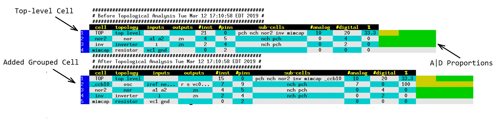

Manual
Setup
Before running the tool, set the following environment variable to the path to the code repository of POSH:
setenv DEGEM_ROOT '<path to DEGEM source code>'
A correct $DEGEM_ROOT path should have a bunch of degem_*.tcl files in it.
Supported Formats
DEGEM supports the official SPICE netlist specifications. It also supports meta information provided by the CDL format. Since DEGEM does not simulate circuits internally, but rather relies on external simulators (e.g. HSPICE), it avoids the low-level details and only populates the internal database with structural information. Its interest in technology models is limited to identifying types of circuit components, while parameters, equations and bins are left for the characterizing simulator to read directly.
At this point, there is no supprt for other commercial formats, such as Spectre.
Switches
The degem executable can be used with the following options, listed in descening priority:
-f -file -filesSPICE netlists to be loaded-c -cellSpecifies the top-level cell to be analyzed. Default: all instances at the top level.-SSpecify a Tcl script to run after initial files are loaded-v -verbosePrint debug information-s -sessionLoad and save project information to a named session-m -modelCache models in a model file and use it in future runs, instead of parsing .LIB libraries-h -helpDisplay this help and exit-l -logGenerate a plain log file, in parallel to XTERM color stdout-gndAssign a gnd role to a top-level net. This command supports a single-quoted list of glob patterns. e.g.-vdd 'VSS* VM_*'-vddAssign a vdd role to a top-level net. This command supports a single-quoted list of glob patterns. e.g.-vdd 'VDD* VP_*'-ct -compile_topologyCompile the topology library.-iStart an interactive dialog-x -reset -init -startSpecify a Tcl command to run after initial files are loaded-w -webUse the tool via web GUI
Configuration
In addition to command line switches, the tool supports configuration files. Configurations can be sourced in more than one way:
A
ckt.cfgfile in the same directory as the loaded SPICE netlistA
CKT.cfgfile in the same directory,CKTis the name of the top-level circuit.Any script provided in the
-Soption
The configuration command is CFG. It accepts as first argument a name of a parameter, followed by a value or values.
The following configuration parameters are as following:
CFG power pattern1 .. patternN- specify a list of glob-style patterns to be matched withCKTnets. All matches will be assigned asup1power connection role in the circuit. This configuration is equivalent to the -vdd switch.CFG ground pattern1 .. patternN- specify a list of glob-style patterns to be matched withCKTnets. All matches will be assigned asup0power connection role in the circuit. This configuration is equivalent to the -gnd switch.CFG rule parameter [on|off]- turn an analysis rule on or off. To see a full list of rules used by the tool, use the-h rulesswitch.CFG topo_subst subckt component- bypass the SPICE.modelconstructs by assigning a topological substitute component toa subckt, e.g.CFG topo_subst resnet rmakes the topological engine treat resnet’s as resistors.CFG global nets1 .. netN- add global nets definitions to the.globalSPICE cards.
Stand-Alone DEGEM Scripts
A “shabang” script can be written using the DEGEM repository, by employing the -S switch.
At the very first line in the file, copy/paste the following:
#\
exec $DEGEM_ROOT/degem -S $0
The line can be added with all the other switches supported by DEGEM. After that, use the Tcl API to write a DEGEM-based script.
See the reference script: $DEGEM/regression.tcl.
This script performs all the common stages of processing a circuit from SPICE to model.
The script uses some I/O utilities to generate summary tables and HTML formatted output.
Example Run
$DEGEM_ROOT/degem -c TOP -f $DEGEM_ROOT/circuits/Brown/TempSense/tsensor.sp -S $DEGEM_ROOT/regression.tcl -vdd 'vdd*' -gnd 'vss gnd'

The example above shows a small design that has both instantiated sub-circuits and loose transistors.
The transistors in the top level are grouped into _ccb10, which gets recognised automatically as a current-starved inverter circuit, which is part of the oscillators class (osc).
The analog/digital breakdown of the transistors is shown in absolute numbers, analog percentage and graphic color bar. The latter is colored per this project convention of orange for analog and green for digital.